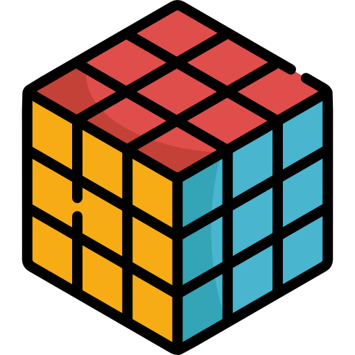

Je travaille actuellement sur l'optimisation de ce portfolio pour les appareils mobiles. Pour une meilleure expérience, veuillez consulter le site sur un ordinateur.
La version mobile sera bientôt disponible...
En attendant, vous pouvez télécharger mon CV ou me contacter :
Continuer vers la version desktop